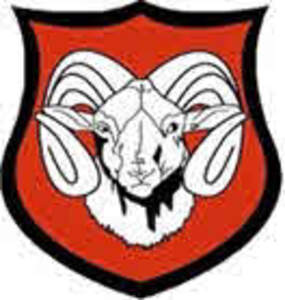

Trade Mark Journal No.2025/042 17 October 2025
UK00004272740 2 October 2025 (21,25,28,41)

- Class 21
- Mugs; Cups and mugs; Coffee mugs; Ceramic mugs; Earthenware mugs; Porcelain mugs; Mugs of porcelain; Beer mugs; Glass mugs; China mugs; Mugs of china; Insulated mugs; Travel mugs; Mug cosies; Mugs made of porcelain; Mugs made of earthenware; Mug racks; Mugs made of china; Drinking mugs made of porcelain; Vacuum mugs; Mugs made of plastic; Mug sleeves; Mugs made of ceramic materials; Mugs of precious metal; Mug trees; Drinkware; Teapots; Coffee cups; Tankards; Coffee pots; Coasters (tableware); Porcelain coasters; Mugs made of fine bone china; Tea cups; Mugs, not of precious metal; Pint tankards; Coffee stirrers; Tumblers for use as drinking glasses; Carafes; Pewter tankards; Glass cups; Cups; Tumblers; Commemorative statuary cups of porcelain, ceramic, earthenware, terra-cotta or glass; Tea pots; Cups made of earthenware; Cups made of pottery; Demitasse sets comprised of cups and saucers; Figurines [statuettes] of porcelain, ceramic, earthenware or glass; Figurines of porcelain, ceramic, earthenware, terra-cotta or glass for cakes; Prize cups of porcelain, ceramic, earthenware, terra-cotta or glass; Goblets; Holders for tumblers; Glass carafes; Insulated bottles [flasks]; Figurines of earthenware; Saucepans (Earthenware -); Earthenware saucepans; Glass pots; Ceramic figurines; Trivets; Beer steins; Glasses, drinking vessels and barware; Steins; Ceramic tableware; Souvenir plates; Pewter goblets; Cups made of china; Pint glasses; Coffee pots [non-electric]; Non-electric coffee pots; Beer jugs; Tumblers [drinking vessels]; Tea canisters; Trivets [table utensils]; Tea cosies; Cosies (Tea -); Statuettes of porcelain, ceramic, earthenware or glass; Cardboard cups; Drinking steins; Beer glasses; Statues of porcelain, ceramic, earthenware or glass; Statues of porcelain, earthenware, ceramic or glass; Glass bowls; Bowls (Glass -); Busts of porcelain, ceramic, earthenware or glass; Figurines of glass; Liqueur cups; Plastic cups; Drinking cups; Insulated lids for plates and dishes; Insulating sleeve holder for beverage cups; Glass flasks [containers]; Glassware; Figurines of porcelain, ceramic, earthenware, terra-cotta or glass; Sippy cups; Beverage glassware; Urns being vases; Plaques of earthenware; Figurines of porcelain; Ceramic ornaments; Tableware of porcelain; Decanters; Coffee services [tableware]; Glass tableware; Crockery made of porcelain; Glass flasks; Boxes of earthenware; Coffee services of ceramic; Biodegradable cups; Stirrers (Drink -); Compostable cups; Glass decanters.
- Class 25
- Clothing; Knitwear [clothing]; Jackets [clothing]; Ready-to-wear clothing; Woolen clothing; Furs [clothing]; Layettes [clothing]; Clothing layettes; Garments for protecting clothing; Linen clothing; Headbands [clothing]; Headbands for clothing; Gloves [clothing]; Gloves as clothing; Clothes; Aprons [clothing]; Maternity clothing; Kerchiefs [clothing]; Jerseys [clothing]; Denims [clothing]; Shorts [clothing]; Cashmere clothing; Capes (clothing); Silk clothing; Collars [clothing]; Parts of clothing, footwear and headgear; Knitted clothing; Windproof clothing; Hoods [clothing]; Wristbands [clothing]; Embroidered clothing; Rainproof clothing; Waterproof clothing; Casual clothing; Jackets being sports clothing; Jackets (Stuff -) [clothing]; Stuff jackets [clothing]; Bottoms [clothing]; Playsuits [clothing]; Ready-made clothing; Clothing for leisure wear; Latex clothing; Trunks being clothing; Infant clothing; Woven clothing; Drawers [clothing]; Drawers as clothing; Leisure clothing; Ties [clothing]; Clothing for sports; Sports clothing; Athletic clothing; Clothing for children; Muffs [clothing]; Bodies [clothing]; Clothing for babies; Clothing for infants; Tops [clothing]; Clothing for cycling; Weatherproof clothing; Pockets for clothing; Fabric belts [clothing]; Water-resistant clothing; Triathlon clothing; Handwarmers [clothing]; Clothing for skiing; Beach clothing; Thermal clothing; Chaps (clothing); Cowls [clothing]; Men's clothing; Fishing clothing; Mitts [clothing]; Braces for clothing; Dance clothing.
- Class 28
- Sports equipment; Balls for sports; Sports balls; Rugby footballs; Rugby balls; Sport balls; Balls for playing sports.
- Class 41
- Sports club services; Sports and fitness; Competitions (Organization of sports -); Organization of sports competitions; Sports coaching; Organising of sports and sports events; Organising of sports competitions and sports events; Organising of sports events and of sports competitions; Organisation of sports events in the field of football; Organisation of sports tournaments; Organisation of sports competitions; Fan club services (entertainment); Training of sports players; Fan club services; Management of events for sporting clubs; Organisation of sporting competitions and sports events; Organization of electronic sports competitions; Fitness club services; Provision of sporting club facilities; Club sporting facilities (Provision of -); Fan clubs; Sports refereeing; Organising of sports competitions; Competitions (Organising of sports -); Sports competitions (Organising of -); Gymnasium club services; Sports training; Training in sports; Entertainment services in the nature of a wrestling club; Club services [entertainment]; Entertainment club services; Club entertainment services; Organization of sport fishing competitions; Sports activities; Coaching in the field of sports; Sports and fitness services; Fan club organisation; Arrangement of sports competitions; Comedy club services; Providing facilities for sporting events, sports and athletic competitions and awards programmes; Arranging of sports competitions; Tuition in sports; Sports tuition; Sports coaching services; Fan clubs (Organisation of -); Organisation of football competitions; Organisation of sports tuition; Club [cabaret] services; Tournaments (Staging of sports -); Sports officiating; Providing sports facilities for playing polo; Organising of sports competitions and events; Education, entertainment and sports; Country clubs providing sporting facilities; Sports camp services; Providing facilities for sports tournaments; Conducting of sports competitions; Sports facilities (Leasing of -); Organising of sports events; Football academy services; Sports entertainment services; Organization of soccer games; Health and fitness club services; Health club [fitness] services; Providing sports facilities for archery.
Sheppey Rugby Football Club